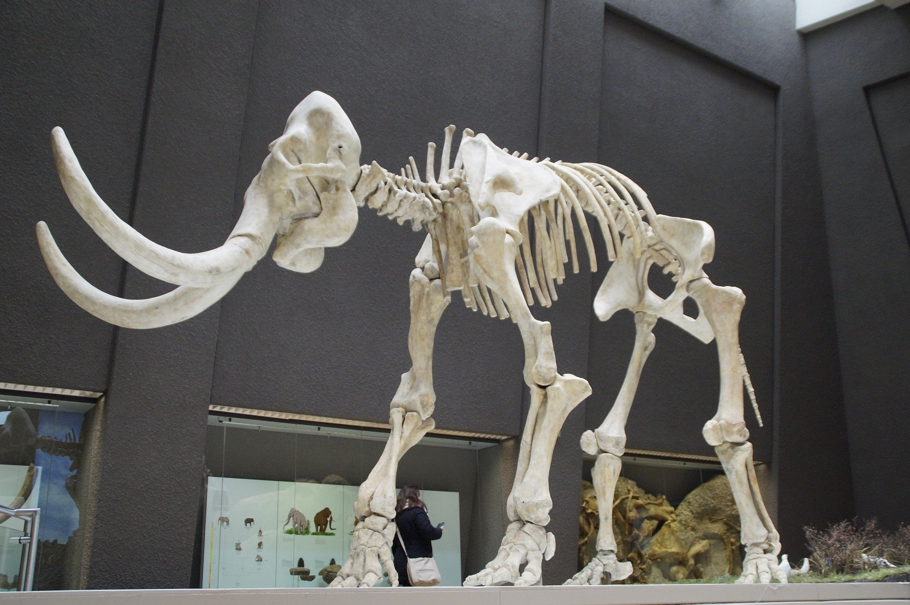
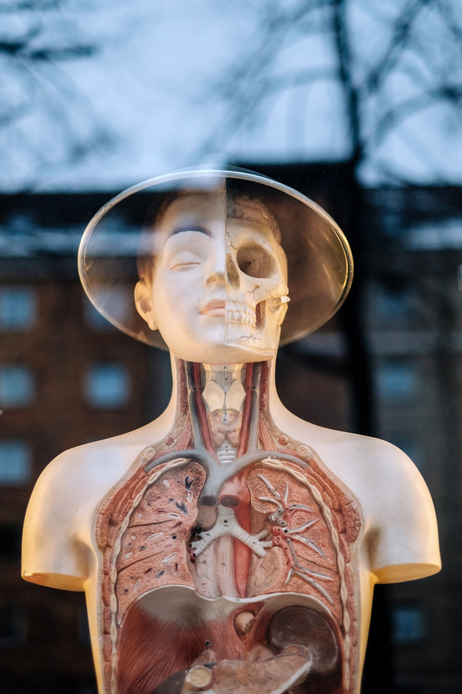
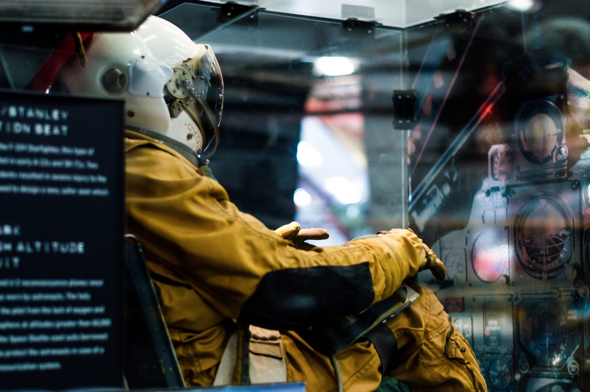
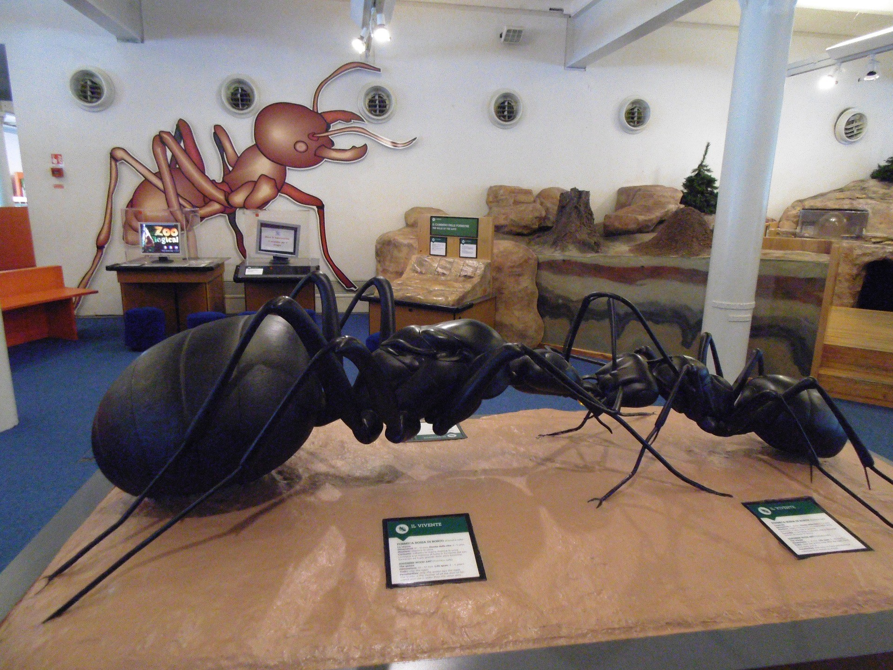

Cosmology
Explore the wonders of our cosmos. Our fantastic exhibition, ‘The Sky
Above Us’,
explores the night sky and what we can see and know about
the universe around us.
We’ll locate the various constellationsand
galaxies that can be seen and learn a bit about
the early navigators
who used the stars to travel by.
Follow the journey of our solar exploration: from early Arab traders,
to Galileo’s telescope,
to the latestexploration of the planets in our
solar system

Evolution
For centuries, philosophers and scientists have wrestled with the
question of our origins. Where do we come from and how did we get here?
Since Darwin proposed his theory of evolution we have had aframework
for exploring and understanding our place in this world.
Discover the origins of life on this planet and how the species we
know today have evolved our time.
You can also take some time to meet a
few of the creatures who didn’t survive, including our WoollyMammoth,
the Dodos, and a number of dinosaurs too.

Biology & Medicine
From micro-organisms to the human body, major breakthroughs in biology
are offering us uniqueinsights into the great wonders of the tiny
world.
For many people their life expectancy is much longer and their quality
of life much improved, thanks to the growth of our understanding of
medicine.
Over a series of exhibits we explore the history ofmedicine
and take a look at some major breakthroughs including the discovery of
penicillin and the firstheart transplant.
Many of our great medicinal discoveries have come not only from the
lab, but also from observinganimals in the wild. Often our fellow
creatures have beat us to it.

Robotics & AI
The information revolution is here and robotics and artificial
intelligence are the science of the future.
From useful home
applications of AI to industrial uses of robotics, the future is here.
You can even say hello and shake the hand of Rob the Robot.

Ecology
As we learn more and more of the impact humans are having on the
planet, the more important it becomes
that scientists explore how to
create a sustainable future not just for humans but for the whole
planet.
In our ecology section of the museum, we unpack the dangers we
currently face
including globalwarming, extinction of species, and
pollution.
But we also focus on the positive ways we can allcontribute
to a brighter future.
Special Events and Exhibitions
Visiting Professor of Aeronautics
It is our pleasure to announce that Prof Sheila Widnall from the
Massachusetts Institute of Technologywill be delivering 3 lectures
on the development of aeronautics and where the future lies in
this exciting‘space’.
Night in the Musuem
Get your family together for an exciting night in the museum as
you sleep over beside dinosaurs andscience displays. Bring your
own sleeping bag and get ready to rough it as we go exploring the
wondersof science.
Energetica Exhibition on Loan
On loan from the NEMO Science Museum in Amsterdam, the Energetica
exhibition is coming to theCommunity Science Museum. It’s a series
of installations that allow visitors to experience the power ofthe
elements as we harness them. From solar energy powering lighting,
to ‘Wind Island’ that shows howturbines are able to use and
control wind to create power.